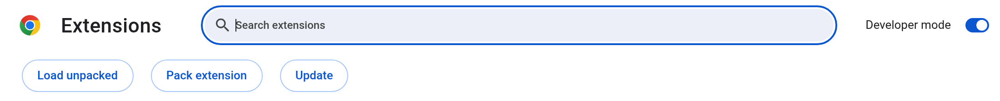
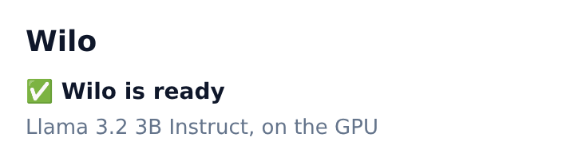
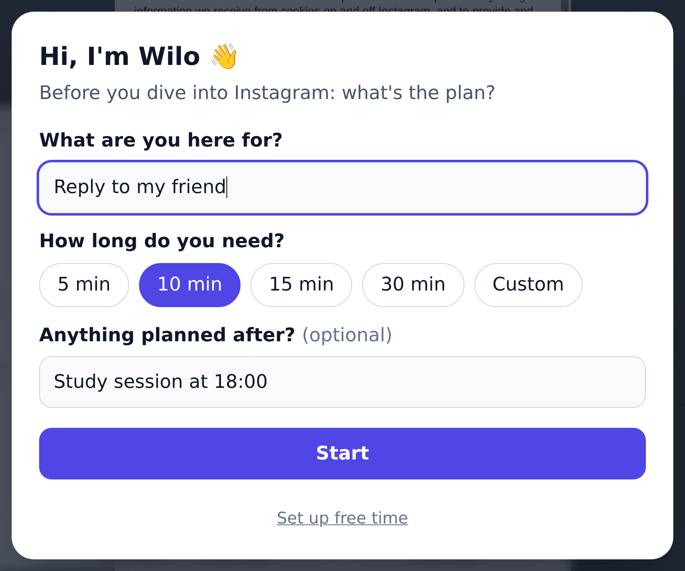
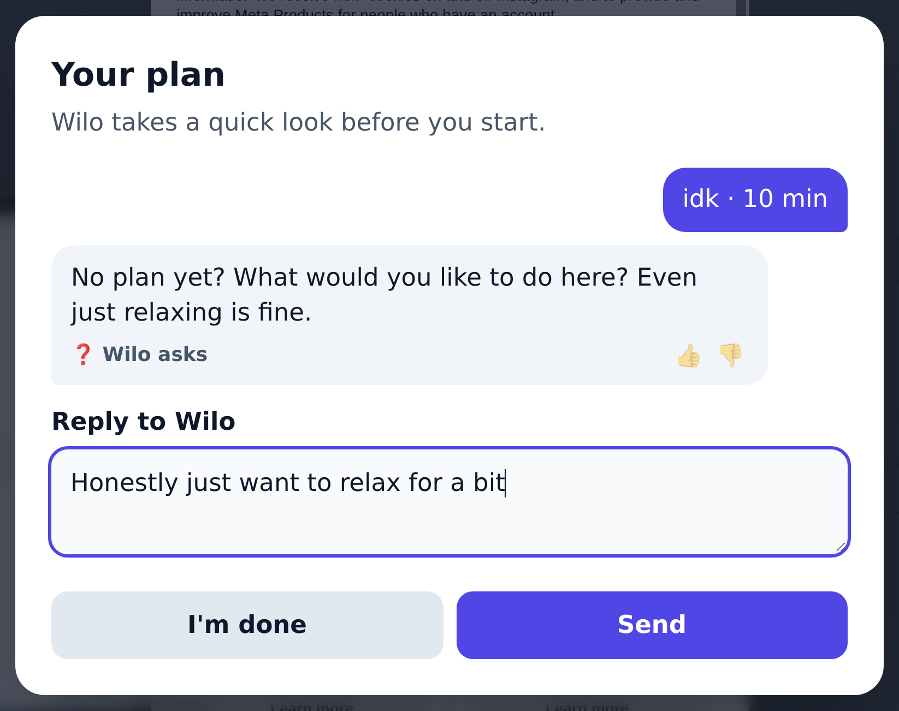
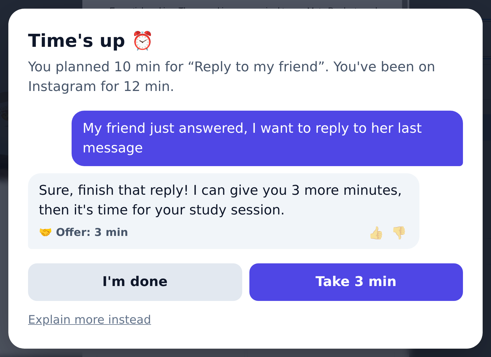
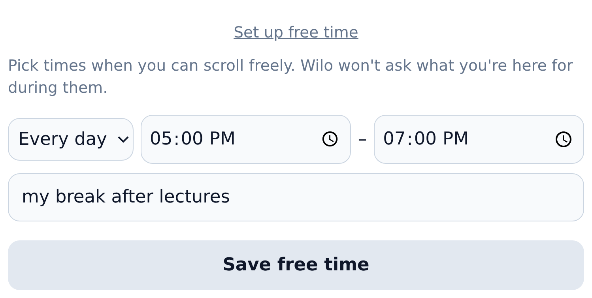
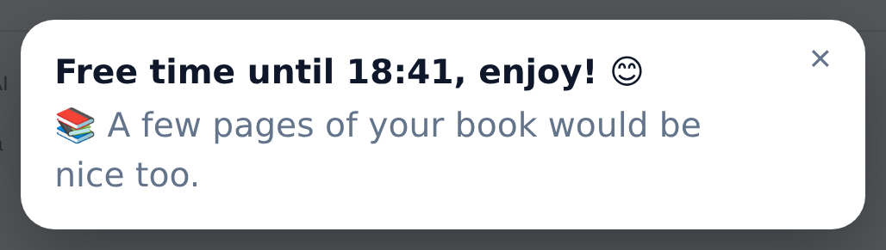
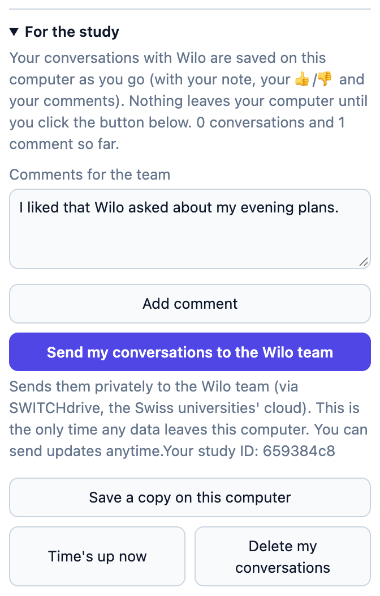

Wilo 👋 tester guide
Wilo is a small companion that helps you use social media on purpose. It runs entirely on your computer. However, as a tester we ask that you kindly share your conversations with us by clicking Send at the end (step 4). This is the only time any data leaves your device.
1 Install
- Unzip wilo-extension.zip and keep the wilo-extension folder somewhere permanent (e.g. Documents).
- In Chrome, go to
chrome://extensions, turn on Developer mode ①, click Load unpacked ② and pick the wilo-extension folder.

1 2- Click the puzzle icon 🧩 in Chrome's toolbar and pin Wilo. Click it: the first time, Wilo downloads its brain (2 GB, a few minutes). Wait until it says Wilo is ready.

chrome://extensions. Your conversations and Wilo's brain are kept.2 Use Instagram as usual
Wilo watches Instagram, YouTube, TikTok, X, Reddit and Facebook.



At time-up, Wilo can answer in three ways:
You can always explain more, or click I'm done. Wilo remembers the conversation, so asking again without a new reason won't change its mind.
3 Make Wilo yours
- Getting to know you: the first time, Wilo asks 4 quick questions; now and then one more. Tap an answer, type your own, or skip.
- Free time: click Set up free time under Start to pick times when you can scroll freely. Wilo won't ask anything then.
- Rate Wilo: 👍 or 👎 on its answers. This is how we teach it.


4 At the end of the study
Click the Wilo icon → For the study → Send my conversations to the Wilo team. That's it: they go straight to the team's private folder. (If it says it couldn't send, email us the file it saved to your Downloads folder.)
Tell us what you think: anytime during the study, write a comment in the same place and click Add comment: a bug, a reply you liked or didn't, feature request, anything. Add as many as you like; they're sent with your conversations (text you typed but didn't add yet is included when you click Send).
